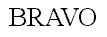

The term 'kerning' refers to specific information used to adjust
the relative positions of coincident glyphs in a string of text. This section
describes several types of kerning information, as well as the way to process
them when performing text layout.
Kerning consists in modifying the spacing between two successive
glyphs according to their outlines. For example, a "T" and a "y" can be
easily moved closer, as the top of the "y" fits nicely under the "T"'s
upper right bar.
When laying out text with only their standard widths, some consecutive
glyphs sometimes seem a bit too close or too distant. For example, the
space between the 'A' and the 'V' in the following word seems a little
wider than needed.

Compare this to the same word, when the distance between these two letters
has been slightly reduced :

As you can see, this adjustment can make a great difference. Some font
faces thus include a table containing kerning distances for a set of given
glyph pairs, used during text layout. Note that :
-
The pairs are ordered, i.e. the space for pair (A,V) isn't necessarily
the space for pair (V,A). They also index glyphs, and not characters.
-
Kerning distances can be expressed in horizontal or vertical directions,
depending on layout and/or script. For example, some horizontal layouts
like arabic can make use of vertical kerning adjustments between successive
glyphs. A vertical script can have vertical kerning distances.
-
Kerning distances are expressed in grid units. They are usually oriented
in the X axis, which means that a negative value indicates that two glyphs
must be set closer in a horizontal layout.
Applying kerning when rendering text is a rather easy process.
It merely consists in adding the scaled kern distance to the pen position
before writing each next glyph. However, the typographically correct renderer
must take a few more details in consideration.
The "sliding dot" problem is a good example : many font faces include
a kerning distance between capital letters like "T" or "F" and a following
dot ("."), in order to slide the latter glyph just right to their main
leg. I.e.

However, this sometimes requires additional adjustments between the
dot and the letter following it, depending on the shapes of the enclosing
letters. When applying "standard" kerning adjustments, the previous sentence
would become :

Which clearly is too contracted. The solution here, as exhibited in
the first example is to only slide the dots when possible. Of course, this
requires a certain knowledge of the text's meaning. The above adjustments
would not necessarily be welcomed if we were rendering the final dot of
a given paragraph.
This is only one example, and there are many others showing that a real
typographer is needed to layout text properly. If not available, some kind
of user interaction or tagging of the text could be used to specify some
adjustments, but in all cases, this requires some support in applications
and text libraries.
For more mundane and common uses, however, we can have a very simple
algorithm, which avoids the sliding dot problem, and others, though
not producing optimal results. It can be seen as :
-
place the first glyph on the baseline
-
save the location of the pen position/origin in pen1
-
adjust the pen position with the kerning distance between the first and
second glyph
-
place the second glyph and compute the next pen position/origin in pen2.
-
use pen1 as the next pen position if it is beyond pen2, use pen2 otherwise.